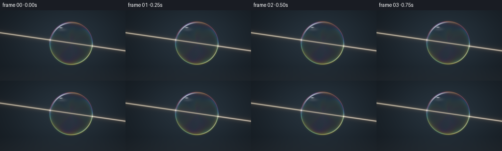
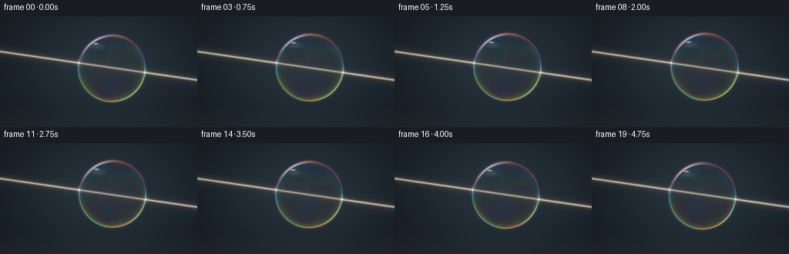

CODING AGENTS AS PIXEL WORLD MODELS
traex/GPT-6.1-Sol · phygen_090
点击播放 · 原生 RGB 像素
逐轮保存的候选
回放视频、检查图与代码变化。
每份候选均可单独播放。实际图片检查记录在下方工具轨迹中。
候选 01播放与检查图
点击播放 · 原生 RGB 像素


展开代码变化
--- 上一保存版本
+++ 本次保存版本
@@ -0,0 +1,132 @@
+from pathlib import Path
+import json
+import numpy as np
+from PIL import Image, ImageFilter
+import artifact_io
+
+ROOT = Path(__file__).resolve().parent
+SPEC = json.loads((ROOT / 'task_spec.json').read_text())
+W, H = SPEC['width'], SPEC['height']
+S = 4
+Y, X = np.mgrid[0:H*S, 0:W*S].astype(float) / S
+rng = np.random.default_rng(108)
+particles = [(rng.uniform(0, 256), rng.uniform(29, 98), rng.uniform(.1,.5), rng.uniform(.15,.65), rng.uniform(-.6,.6)) for _ in range(65)]
+
+def gauss(v, w):
+ return np.exp(-0.5 * (v / w)**2)
+
+def render(k):
+ t = k / SPEC['fps']
+ # Dark photographic backdrop, with a very faint pool of studio illumination.
+ bg_light = np.exp(-((X-139)/109)**2-((Y-60)/79)**2)
+ background = np.stack([.005 + .010*bg_light, .009 + .019*bg_light, .014 + .028*bg_light], axis=-1)
+ floor = np.clip((Y-115)/29, 0, 1)
+ background += floor[...,None]*np.array([.005,.006,.007])
+ img = background.copy()
+ cx = 145 + 1.6*np.sin(t*.9)
+ cy = 67.5 - 2.1*np.sin(t*.75)
+ r = 43.5 + .25*np.sin(t*1.1)
+ dx, dy = X-cx, Y-cy
+ rad = np.sqrt(dx*dx+dy*dy)
+ rho = rad/r
+ theta = np.arctan2(dy,dx)
+ mask = np.clip((r-rad)*S+.5,0,1)
+ z = np.sqrt(np.maximum(0,1-rho*rho))
+ edge_dist = rad-r
+
+ # White collimated light crossing the hollow, transparent bubble.
+ slope = .145
+ line_y = 45.8 + slope*X
+ dist = (Y-line_y)/np.sqrt(1+slope*slope)
+ inside = mask
+ # The soap film scatters more than the air-filled center; it does not behave
+ # like a solid glass lens. Keep the central transmitted path almost straight.
+ transmission = 1-.29*inside
+ strength = .86 + .018*np.sin(t*1.7)
+ core = gauss(dist,.47)*.68 + gauss(dist,1.03)*.24
+ haze = gauss(dist,3.8)*.021 + gauss(dist,10)*.0028
+ img += ((core+haze)*transmission*strength)[...,None]*np.array([1.0,.87,.65])
+ # Extremely restrained chromatic edging on the transmitted beam.
+ right = np.clip((X-cx-r+2)/8,0,1)
+ img += (gauss(dist-.22,.8)*right*.045)[...,None]*np.array([.3,.58,1.0])
+ img += (gauss(dist+.22,.8)*right*.033)[...,None]*np.array([1,.18,.09])
+
+ # Soap film interference: nanometre-scale thickness changes under drainage.
+ # Broad shifting bands, rather than an opaque rainbow-painted sphere.
+ flow = (1.0*np.sin(2.6*theta + 5.0*z - .32*t)
+ + .55*np.sin(5.3*theta - 3.1*z + .23*t)
+ + .18*np.sin(12*theta + 9*z-.45*t))
+ thickness = 380 + 115*(dy/r) + 32*flow + 11*np.sin(6*z+theta-.22*t)
+ incidence = np.sqrt(np.maximum(0,1-(1-z*z)/(1.333**2)))
+ wavelengths = np.array([650.,530.,450.])
+ phase = 4*np.pi*1.333*thickness[...,None]*incidence[...,None]/wavelengths
+ interference = .5+.5*np.cos(phase+np.pi)
+ # Real soap-film Fresnel reflectance, elevated near tangent edges.
+ fresnel = .018 + .70*(1-z)**4
+ reflect_color = .06 + .52*interference
+ environment = (.32+.32*np.cos(theta+1.6)**2+.18*np.sin(theta*3+.5)**2)
+ coating = mask[...,None]*reflect_color*fresnel[...,None]*environment[...,None]
+ # Minimal internal reflected colour shows the empty, transparent volume.
+ interior_strength = (.012 + .020*(1-z)**2)*mask
+ coating += interior_strength[...,None]*(interference*.20)*np.array([.6,.85,1.])
+ img = img*(1-.028*mask[...,None]) + coating
+ # Crisp, thin, irregular iridescent silhouette, plus subpixel exterior bloom.
+ edgecolor = .08 + .65*interference
+ rim = gauss(edge_dist,.38)*(.26 + .31*np.cos(theta+2.2)**2)
+ img += rim[...,None]*edgecolor
+ img += (gauss(edge_dist,1.7)*.025)[...,None]*edgecolor
+
+ # Reflections of studio softboxes are clipped onto the curved shell.
+ # Curved highlight on upper-left edge, and a less intense lower-right arc.
+ def angle_distance(a,b):
+ return np.arctan2(np.sin(a-b),np.cos(a-b))
+ arc = gauss(angle_distance(theta,-2.14),.32)*gauss(rad-r*.961,.62)
+ img += arc[...,None]*np.array([.56,.64,.70])
+ arc2 = gauss(angle_distance(theta,.73),.39)*gauss(rad-r*.979,.39)
+ img += arc2[...,None]*np.array([.18,.23,.22])
+ # Broad, very transparent reflection beside a small bright rectangular highlight.
+ reflected = np.exp(-((dx+19)/8)**2-((dy+28)/3.1)**2)*mask
+ img += reflected[...,None]*np.array([.031,.041,.047])
+ glint = np.exp(-((dx+20.8)/2.7)**2-((dy+31.8)/.83)**2)*mask
+ img += glint[...,None]*np.array([.48,.53,.57])
+
+ # Solve for the two ray/spherical-film intersection points.
+ b0 = 45.8 + slope*cx - cy
+ roots = np.roots([1+slope*slope,2*slope*b0,b0*b0-r*r])
+ for j, root in enumerate(sorted(roots)):
+ px = cx + root
+ py = 45.8 + slope*px
+ d2 = (X-px)**2 + (Y-py)**2
+ halo = np.exp(-d2/10.5)*.078
+ hit = np.exp(-d2/.72)*(.96 if j==0 else .82)
+ img += (halo+hit)[...,None]*np.array([1.,.87,.64])
+ # A small tangent glimmer on the skin where light crosses it.
+ a = np.arctan2(py-cy,px-cx)
+ skin = gauss(angle_distance(theta,a),.080)*gauss(edge_dist,.7)*.16
+ img += skin[...,None]*np.array([1.,.70,.38])
+
+ # Fine suspended particles make the beam legible without filling the image.
+ for px,py,sz,alpha,vel in particles:
+ px = (px + t*vel*.8) % W
+ py = py - t*.36
+ distance_to_beam = abs(py-(45.8+slope*px))
+ brightness = alpha*(.007+.060*np.exp(-(distance_to_beam/3.5)**2))
+ pd = ((X-px)**2+(Y-py)**2)/(sz*sz)
+ img += (np.exp(-pd*.5)*brightness)[...,None]*np.array([1.,.9,.70])
+
+ # Gentle bloom and photographic display transform.
+ bright = np.maximum(img-.18,0)
+ bloom_img = Image.fromarray(np.uint8(np.clip(bright,0,1)*255))
+ bloom = np.asarray(bloom_img.filter(ImageFilter.GaussianBlur(1.2*S))).astype(float)/255
+ img += bloom*.14
+ # Soft shoulder retains beam/film detail while keeping the black backdrop.
+ img = np.maximum(img,0)
+ rgb = np.clip(img/(1+img*.32),0,1)**(1/2.2)
+ vignette = np.clip(1-.13*((X-133)/175)**2-.10*((Y-71)/100)**2,.70,1)
+ rgb *= vignette[...,None]
+ im = Image.fromarray(np.uint8(np.clip(rgb,0,1)*255))
+ return np.asarray(im.resize((W,H), Image.Resampling.LANCZOS))
+
+frames = np.stack([render(i) for i in range(SPEC['frames'])])
+artifact_io.save(frames, ROOT)
+print('Saved', frames.shape, 'RGB frames')
可观测工具轨迹
实际执行的命令与返回图片。
命令 1exit 0
/bin/bash -lc "ls -la && cat prompt.txt && printf '\\n---RULES---\\n' && cat GENERATION_RULES.md && printf '\\n---SPEC---\\n' && cat task_spec.json"
命令 2exit 0
/bin/bash -lc "cat artifact_io.py && python - <<'PY'
import numpy, PIL
print('numpy/PIL available')
PY"命令 3exit 0
/bin/bash -lc "cat > generate.py <<'PY'
from pathlib import Path
import json
import numpy as np
from PIL import Image, ImageFilter
import artifact_io
ROOT = Path(__file__).resolve().parent
SPEC = json.loads((ROOT / 'task_spec.json').read_text())
W, H = SPEC['width'], SPEC['height']
S = 4
Y, X = np.mgrid[0:H*S, 0:W*S].astype(float) / S
rng = np.random.default_rng(108)
particles = [(rng.uniform(0, 256), rng.uniform(29, 98), rng.uniform(.1,.5), rng.uniform(.15,.65), rng.uniform(-.6,.6)) for _ in range(65)]
def gauss(v, w):
return np.exp(-0.5 * (v / w)**2)
def render(k):
t = k / SPEC['fps']
# Dark photographic backdrop, with a very faint pool of studio illumination.
bg_light = np.exp(-((X-139)/109)**2-((Y-60)/79)**2)
background = np.stack([.005 + .010*bg_light, .009 + .019*bg_light, .014 + .028*bg_light], axis=-1)
floor = np.clip((Y-115)/29, 0, 1)
background += floor[...,None]*np.array([.005,.006,.007])
img = background.copy()
cx = 145 + 1.6*np.sin(t*.9)
cy = 67.5 - 2.1*np.sin(t*.75)
r = 43.5 + .25*np.sin(t*1.1)
dx, dy = X-cx, Y-cy
rad = np.sqrt(dx*dx+dy*dy)
rho = rad/r
theta = np.arctan2(dy,dx)
mask = np.clip((r-rad)*S+.5,0,1)
z = np.sqrt(np.maximum(0,1-rho*rho))
edge_dist = rad-r
# White collimated light crossing the hollow, transparent bubble.
slope = .145
line_y = 45.8 + slope*X
dist = (Y-line_y)/np.sqrt(1+slope*slope)
inside = mask
# The soap film scatters more than the air-filled center; it does not behave
# like a solid glass lens. Keep the central transmitted path almost straight.
transmission = 1-.29*inside
strength = .86 + .018*np.sin(t*1.7)
core = gauss(dist,.47)*.68 + gauss(dist,1.03)*.24
haze = gauss(dist,3.8)*.021 + gauss(dist,10)*.0028
img += ((core+haze)*transmission*strength)[...,None]*np.array([1.0,.87,.65])
# Extremely restrained chromatic edging on the transmitted beam.
right = np.clip((X-cx-r+2)/8,0,1)
img += (gauss(dist-.22,.8)*right*.045)[...,None]*np.array([.3,.58,1.0])
img += (gauss(dist+.22,.8)*right*.033)[...,None]*np.array([1,.18,.09])
# Soap film interference: nanometre-scale thickness changes under drainage.
# Broad shifting bands, rather than an opaque rainbow-painted sphere.
flow = (1.0*np.sin(2.6*theta + 5.0*z - .32*t)
+ .55*np.sin(5.3*theta - 3.1*z + .23*t)
+ .18*np.sin(12*theta + 9*z-.45*t))
thickness = 380 + 115*(dy/r) + 32*flow + 11*np.sin(6*z+theta-.22*t)
incidence = np.sqrt(np.maximum(0,1-(1-z*z)/(1.333**2)))
wavelengths = np.array([650.,530.,450.])
phase = 4*np.pi*1.333*thickness[...,None]*incidence[...,None]/wavelengths
interference = .5+.5*np.cos(phase+np.pi)
# Real soap-film Fresnel reflectance, elevated near tangent edges.
fresnel = .018 + .70*(1-z)**4
reflect_color = .06 + .52*interference
environment = (.32+.32*np.cos(theta+1.6)**2+.18*np.sin(theta*3+.5)**2)
coating = mask[...,None]*reflect_color*fresnel[...,None]*environment[...,None]
# Minimal internal reflected colour shows the empty, transparent volume.
interior_strength = (.012 + .020*(1-z)**2)*mask
coating += interior_strength[...,None]*(interference*.20)*np.array([.6,.85,1.])
img = img*(1-.028*mask[...,None]) + coating
# Crisp, thin, irregular iridescent silhouette, plus subpixel exterior bloom.
edgecolor = .08 + .65*interference
rim = gauss(edge_dist,.38)*(.26 + .31*np.cos(theta+2.2)**2)
img += rim[...,None]*edgecolor
img += (gauss(edge_dist,1.7)*.025)[...,None]*edgecolor
# Reflections of studio softboxes are clipped onto the curved shell.
# Curved highlight on upper-left edge, and a less intense lower-right arc.
def angle_distance(a,b):
return np.arctan2(np.sin(a-b),np.cos(a-b))
arc = gauss(angle_distance(theta,-2.14),.32)*gauss(rad-r*.961,.62)
img += arc[...,None]*np.array([.56,.64,.70])
arc2 = gauss(angle_distance(theta,.73),.39)*gauss(rad-r*.979,.39)
img += arc2[...,None]*np.array([.18,.23,.22])
# Broad, very transparent reflection beside a small bright rectangular highlight.
reflected = np.exp(-((dx+19)/8)**2-((dy+28)/3.1)**2)*mask
img += reflected[...,None]*np.array([.031,.041,.047])
glint = np.exp(-((dx+20.8)/2.7)**2-((dy+31.8)/.83)**2)*mask
img += glint[...,None]*np.array([.48,.53,.57])
# Solve for the two ray/spherical-film intersection points.
b0 = 45.8 + slope*cx - cy
roots = np.roots([1+slope*slope,2*slope*b0,b0*b0-r*r])
for j, root in enumerate(sorted(roots)):
px = cx + root
py = 45.8 + slope*px
d2 = (X-px)**2 + (Y-py)**2
halo = np.exp(-d2/10.5)*.078
hit = np.exp(-d2/.72)*(.96 if j==0 else .82)
img += (halo+hit)[...,None]*np.array([1.,.87,.64])
# A small tangent glimmer on the skin where light crosses it.
a = np.arctan2(py-cy,px-cx)
skin = gauss(angle_distance(theta,a),.080)*gauss(edge_dist,.7)*.16
img += skin[...,None]*np.array([1.,.70,.38])
# Fine suspended particles make the beam legible without filling the image.
for px,py,sz,alpha,vel in particles:
px = (px + t*vel*.8) % W
py = py - t*.36
distance_to_beam = abs(py-(45.8+slope*px))
brightness = alpha*(.007+.060*np.exp(-(distance_to_beam/3.5)**2))
pd = ((X-px)**2+(Y-py)**2)/(sz*sz)
img += (np.exp(-pd*.5)*brightness)[...,None]*np.array([1.,.9,.70])
# Gentle bloom and photographic display transform.
bright = np.maximum(img-.18,0)
bloom_img = Image.fromarray(np.uint8(np.clip(bright,0,1)*255))
bloom = np.asarray(bloom_img.filter(ImageFilter.GaussianBlur(1.2*S))).astype(float)/255
img += bloom*.14
# Soft shoulder retains beam/film detail while keeping the black backdrop.
img = np.maximum(img,0)
rgb = np.clip(img/(1+img*.32),0,1)**(1/2.2)
vignette = np.clip(1-.13*((X-133)/175)**2-.10*((Y-71)/100)**2,.70,1)
rgb *= vignette[...,None]
im = Image.fromarray(np.uint8(np.clip(rgb,0,1)*255))
return np.asarray(im.resize((W,H), Image.Resampling.LANCZOS))
frames = np.stack([render(i) for i in range(SPEC['frames'])])
artifact_io.save(frames, ROOT)
print('Saved', frames.shape, 'RGB frames')
PY
python generate.py"命令 4exit 2
/bin/bash -lc 'if command -v ffmpeg >/dev/null 2>&1; then ffmpeg -v error -y -framerate 4 -i frames/%02d.png -c:v libx264 -crf 17 -pix_fmt yuv420p -movflags +faststart video.mp4; fi ls -lh pixels.npz index.html inspection.png generate.py video.mp4 2>/dev/null'
视觉工具实际返回图片 1

保存候选 1 份；完成命令 4 次；可验证图片返回 1 张。原始 API 响应与完整日志保留在本地。